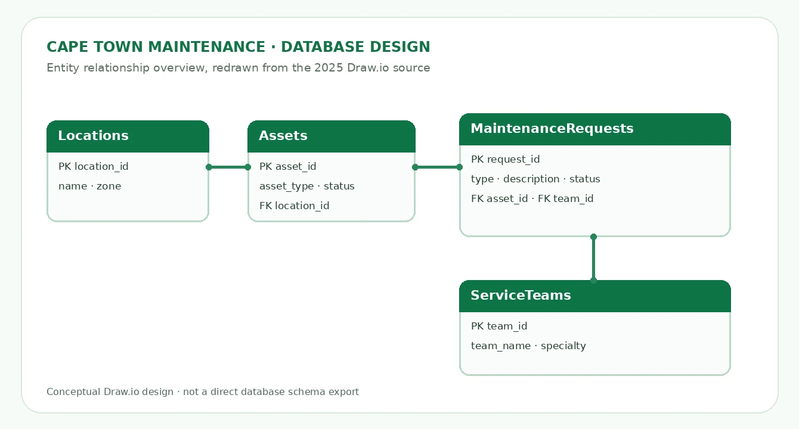
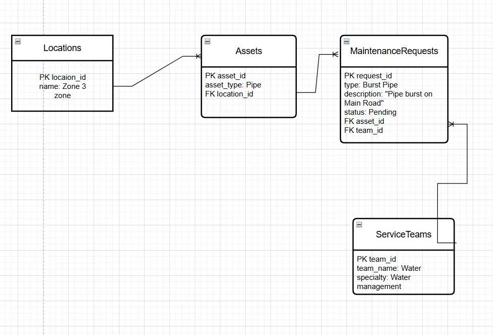
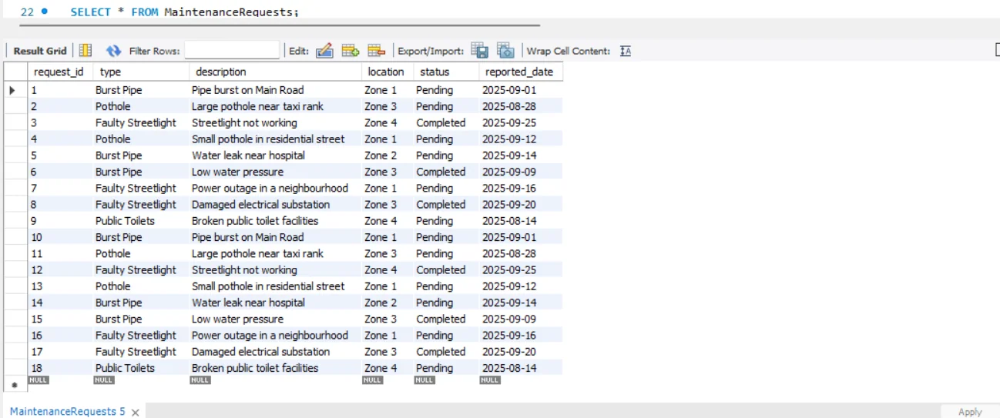
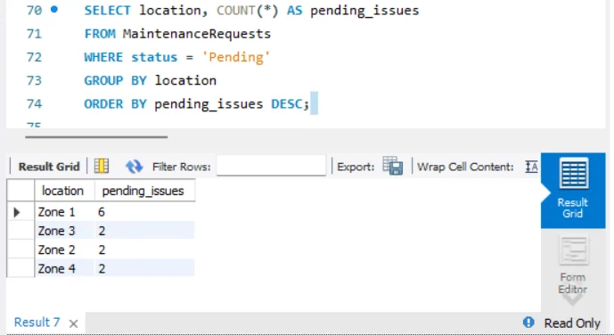
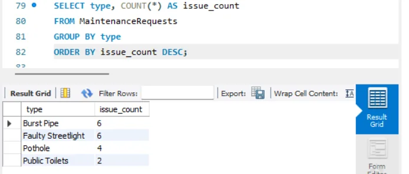

The engineering problem
Infrastructure issues such as damaged roads, burst pipes, faulty streetlights and public facilities require organised maintenance records. I developed a classroom-scale database model that could help a municipality track issues and explore patterns in a sample dataset, using the City of Cape Town as the scenario. This was coursework, not a production municipal database.
What I built
I worked with MySQL Workbench to create the CapeTownMaintenance schema and demonstrated the use of four tables:
| Table | Role in the design |
|---|---|
| MaintenanceRequests | Issue type, description, zone, status and report date |
| Locations | Location names and zones |
| Assets | Infrastructure asset type, status and a foreign key to Locations |
| ServiceTeams | Repair teams and their specialities |
My report also compares MySQL Workbench with Draw.io for managing data versus visualising relationships.
Original report screenshots
The images below are extracted from my GA5 documentation. They show the actual academic database design and SQL results.





SQL methods and reporting
I used CREATE TABLE, INSERT INTO, SELECT, COUNT, GROUP BY, ORDER BY and date filters. In the assignment, these were applied to summarise:
- Pending requests grouped by geographic zone
- Request totals by status
- Common infrastructure incident types
- Cases remaining pending for more than 14 days
- Recently completed cases within a specified historical reporting window
SELECT location AS zone, COUNT(*) AS pending_issues
FROM MaintenanceRequests
WHERE status = 'Pending'
GROUP BY location
ORDER BY pending_issues DESC;The project demonstrates translating stored records into useful summaries for an engineering decision-making scenario.
Explore a browser-based demonstration
The interactive demonstration recreates the nine example request rows contained in my submitted SQL file. You can filter by zone or status and inspect summary counts. It works in a browser without installing MySQL.
The demonstration is a static browser reconstruction using coursework sample records; it does not connect to a live SQL database.
Implementation notes and lessons
Database structure and data integrity are important. The submitted script contains a query that joins on MaintenanceRequests.location_id, although the request table uses a text location field and does not define location_id. The submitted database does create a valid foreign key from Assets.location_id to Locations.location_id.
To make the portfolio repeatable, I have included a separately labelled SQL replay script that uses the original nine request records, provides a valid asset/location join and anchors historical date queries to a 2025 reporting date. The unmodified student submission remains available for transparency.
The report screenshots reflect earlier query executions and may include repeated example rows. Results shown by the browser demo are computed only from the nine submitted INSERT rows and should not be confused with live city data.